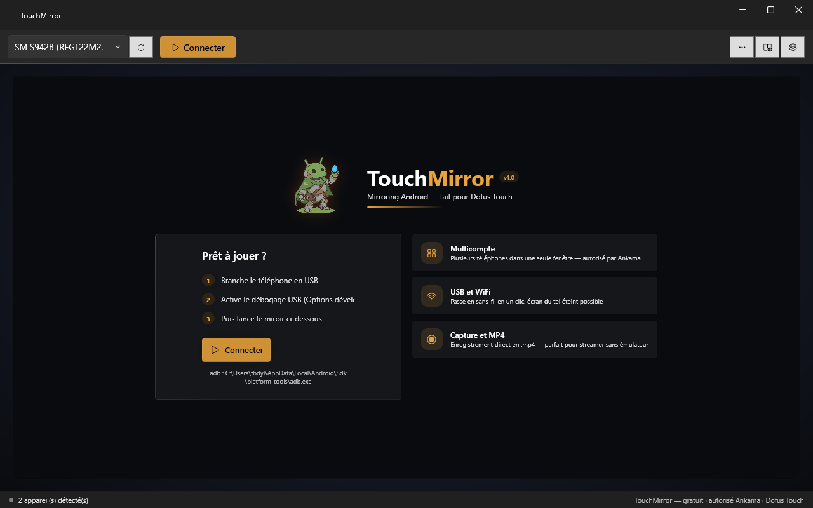

Joue à Dofus Touch sur PC, depuis ton vrai téléphone.
Gratuit · Open source · Pas un émulateur · Pas d'automatisation
Android screen mirroring for Windows — control your phone from your PC
TouchMirror est jeune et avance vite — tes retours comptent vraiment. Rejoins le Discord pour remonter un bug, proposer un plugin, tester en multicompte ou juste dire ce qui te manque. Ce que la communauté demande passe en priorité sur la roadmap.
Bugs, idées, tests multi-téléphones, plugins — tout est lu.

Branche, clique, joue. Le jeu officiel tourne sur ton téléphone — TouchMirror l'affiche et le contrôle depuis le PC via un pipeline GPU zéro-copie. L'alternative open source à scrcpy, pensée pour les joueurs.
Décodage FFmpeg basse latence, dernière frame prioritaire, audio ~400 ms, sockets optimisés.
Plusieurs téléphones dans une seule fenêtre — un compte par téléphone connecté, le modèle autorisé par Ankama.
Bascule en sans-fil en un clic, puis débranche le câble — le flux continue.
MP4 sans ré-encodage, captures PNG, mode capture propre pour les streamers.
L'écran du téléphone passe au noir pendant le mirroring — économise la batterie et l'AMOLED.
Almanax, guides papycha, Atlas, encyclopédie — consultables sans quitter le jeu.
Un câble data classique. adb est embarqué — rien à installer sur le PC.
Options développeur → Débogage USB, puis autorise le PC sur le téléphone.
Le miroir s'affiche, le bouton Dofus lance le jeu. C'est tout.
| Fonction | Détail |
|---|---|
| Souris & clavier | Clic = tactile, Ctrl+molette = pinch-to-zoom, texte tapé comme clavier Bluetooth |
| Presse-papiers | Bidirectionnel — Ctrl+V colle sur le téléphone, copier sur le tel arrive sur le PC |
| Plein écran | F11 — barre de contrôle au survol du bord haut |
| Mises à jour | Détection automatique des nouvelles versions au démarrage |
| Codecs | H.264, H.265, AV1 — jusqu'à la résolution native et 120 fps |
| Comptes | Aucun — aucune donnée collectée, tout reste en local |